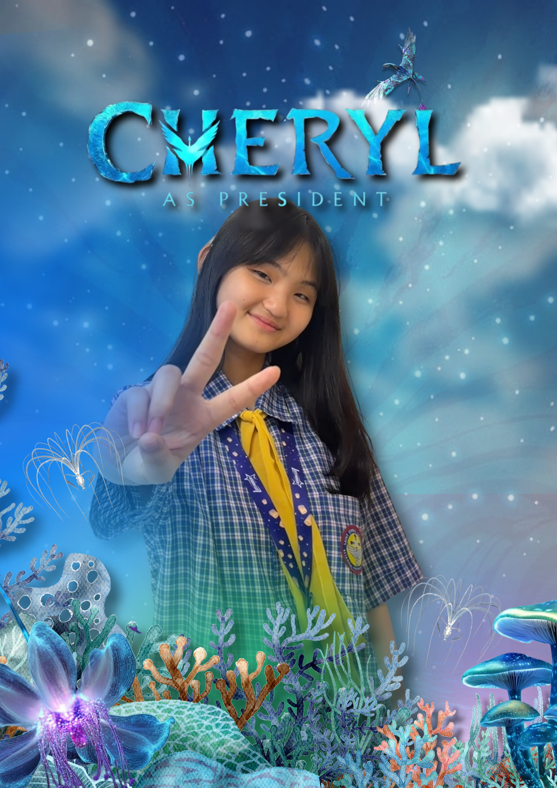

For PresidentCheryl
A little about me
Hello everyone! I am Claritia Cheryl Andhika, or as people call me, Cheryl, and I’m proud to be running for President alongside Nicole for Student Council 2027 as Candidate #2.
If you know me from around school, whether it’s through SJ Captured or simply from chatting between classes, you’ll know I’ve always loved being part of what makes our school feel like a real community.
Together with Nicole, we built our campaign, Kairos, around one core belief: the right time to make our school better is right now. As President, my vision is to build a united school community where every student feels valued and empowered to grow.
So, vote for Candidate #2—Kairos—for Student Council 2027!